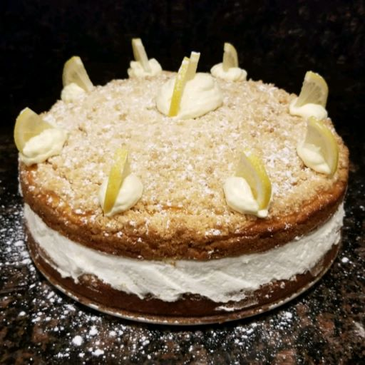

Italian Lemon Cream Cake

Description
This is great! Easy to make, light, and flavorful.
Enjoy a lemon cream cake like your at an Italian restaurant at home . It is a white cake topped with
vanilla crumbs and filled with rich lemon cream. It uses a white cake mix to cut preparation time. Storeable
in a refrigerator.
Ingredients
- 1 package (16.25 ounce) white cake mix
- ¾ cup milk
- 1 tablespoon milk
- 2 eggs
- 3½ tablespoons vegetable oil
- 2 tablespoons butter, melted
- ½ teaspoon vanilla extract
- 4 ounces cream cheese, softened
- ⅔ cup confectioners' sugar, divided, plus more for dusting
- 3 tablespoons lemon juice
- 1 teaspoon grated lemon zest
- 2 cups heavy whipping cream
Steps
- Preheat oven to 350 degrees F (175 degrees C). Spray the bottom of a 10-inch springform pan with cooking
spray.
- Measure 1 cup cake mix; set aside for crumb topping. Place the remaining cake mix in a large bowl;
add 3/4 cup plus 1 tablespoon milk, eggs, and oil. Beat cake mix mixture using an electric mixer until
batter is thoroughly combined, about 2 minutes. Pour batter into the prepared pan.
- Mix melted butter and vanilla extract together in a bowl; stir in reserved 1 cup cake mix until mixture
is crumbly. Sprinkle crumbs over top of cake batter.
- Bake in the preheated oven until a toothpick inserted in the center of the cake comes out clean, 30
to 35 minutes. Cool cake to room temperature in the pan.
- Beat cream cheese, 1/3 cup confectioners' sugar, lemon juice, and lemon zest together in a bowl until
smooth and creamy. Beat cream and remaining 1/3 cup confectioners' sugar together in a separate bowl using an electric mixer until stiff peaks form. Fold cream cheese mixture into whipped cream.
- Remove cake from springform pan. Cut cake horizontally into 2 layers using a serrated knife; remove top
layer. Spread filling onto the bottom cake layer; place top cake over filling. Refrigerate cake for at
least 4 hours. Dust cake with more confectioners' sugar before serving.
Home
Lasagna
Cornucopia Salad